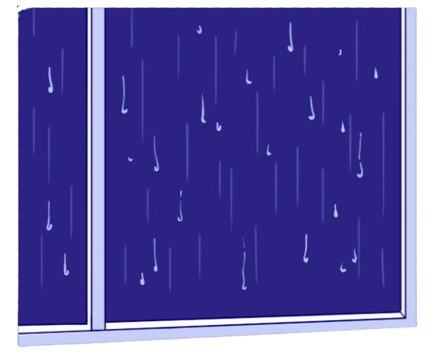

I pressed my palm to the glass. Rain slid down the other side like it had somewhere to be. My hand should have left a fogged print. My face should have been there, even ugly, even tired.
Nothing. Just the room behind me, softer than it ought to be, and the dark outside swallowing the street without giving anything back.
I stepped closer until my breath should have clouded the pane. Still nothing looking back. The window was not broken. It was honest. I did not know which of those frightened me more.